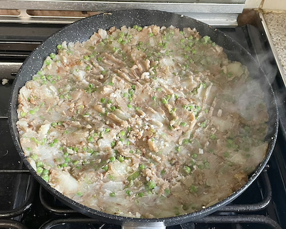
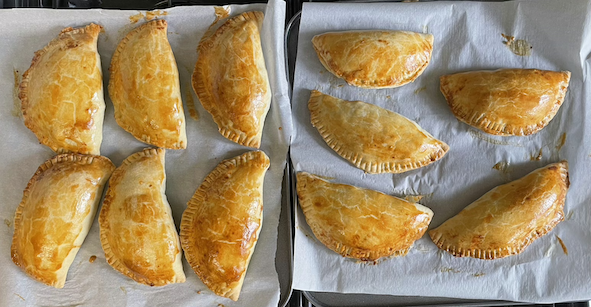

Potato & pea empanadas
Potatoes
- Boil two large potatoes (750g) in skins for 10 mins
- Chop potatoes into 1cm cubes
Filling
- Heat untils seeds splutter
- vegetable oil
- 1 tsp cumin seeds
- Add and cook for 10 mins
- 1 large onion
- 1 green chilli
- 1 tbsp ginger
- Add, stir to coat potatoes and heat for 5 mins until potatoes cooked
- potato cubes
- 200g peas
- 1 tsp ground coriander
- 1 tsp amchoor
- ½ tsp chilli powder
- Remove heat, allow to cool, then add
- 2 tbsp lemon juice
- chopped fresh coriander
- ½ tsp salt
Pies
Notes

